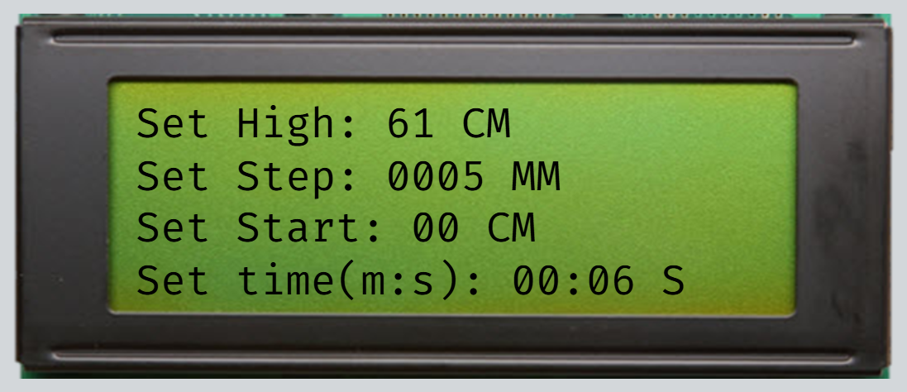
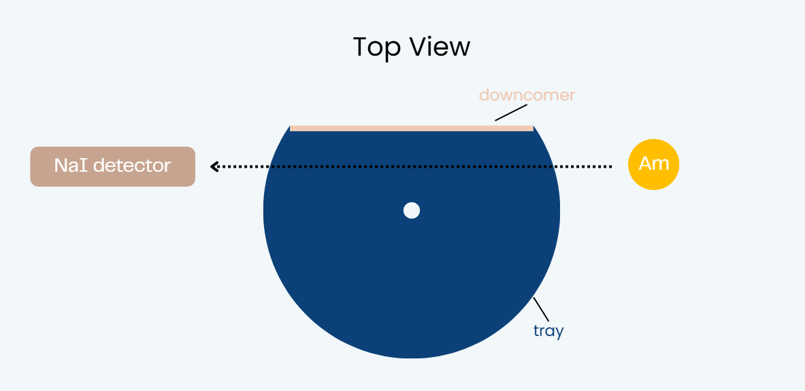
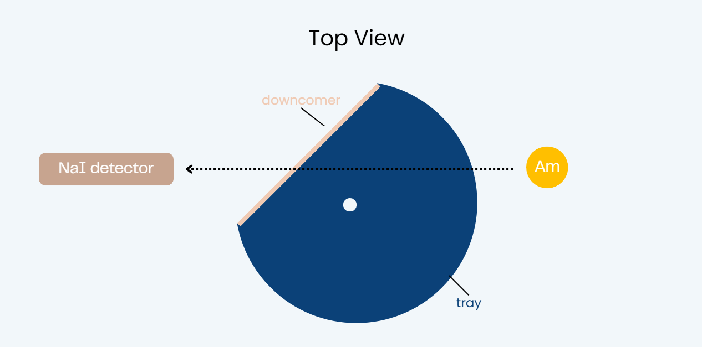
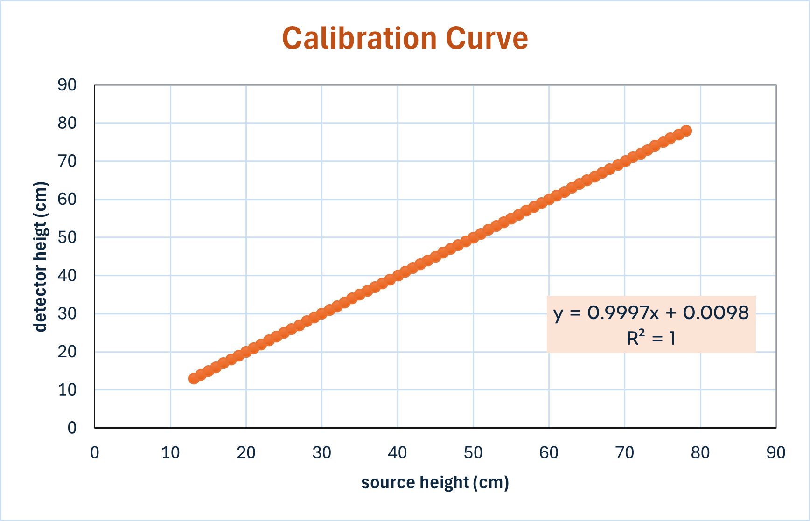

Experiment Setup

This setup illustrates the integration of the gamma source and detector system mounted on the scanning structure.

Scanning Parameters
- Set High: 61 cm
- Set Step: 5 mm
- Set Start: 0 cm
- Set time: 6 seconds
The system moves the source and detector incrementally from the bottom to the top

0° Scan

45° Scan
Movement Accuracy & Calibration

The system underwent calibration tests to ensure the vertical movement of both the source and detector remained perfectly aligned. The measured positions show a highly precise linear relationship, as expressed by the equation y = 0.9997x + 0.0098. With an R2 = 1 and a deviation of less than ±0.5 mm, this accuracy guarantees reliable and consistent density profiling throughout the scanning process.